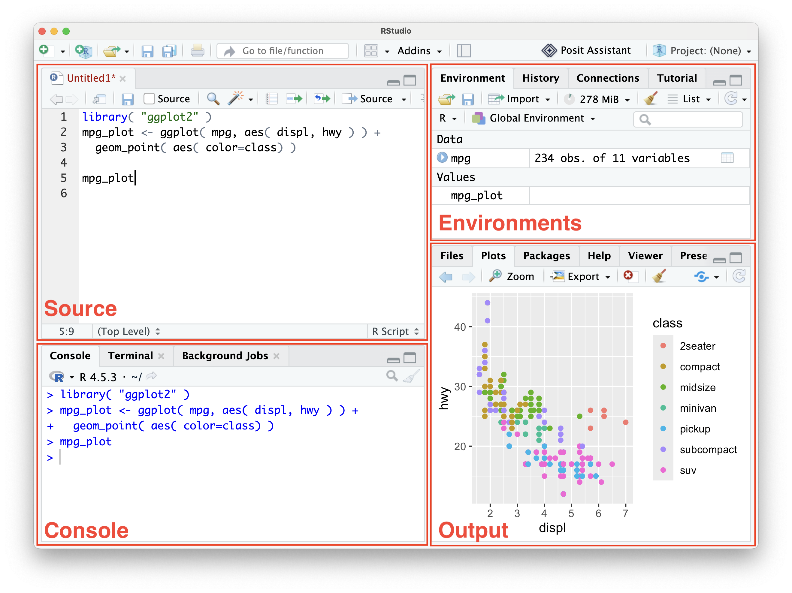
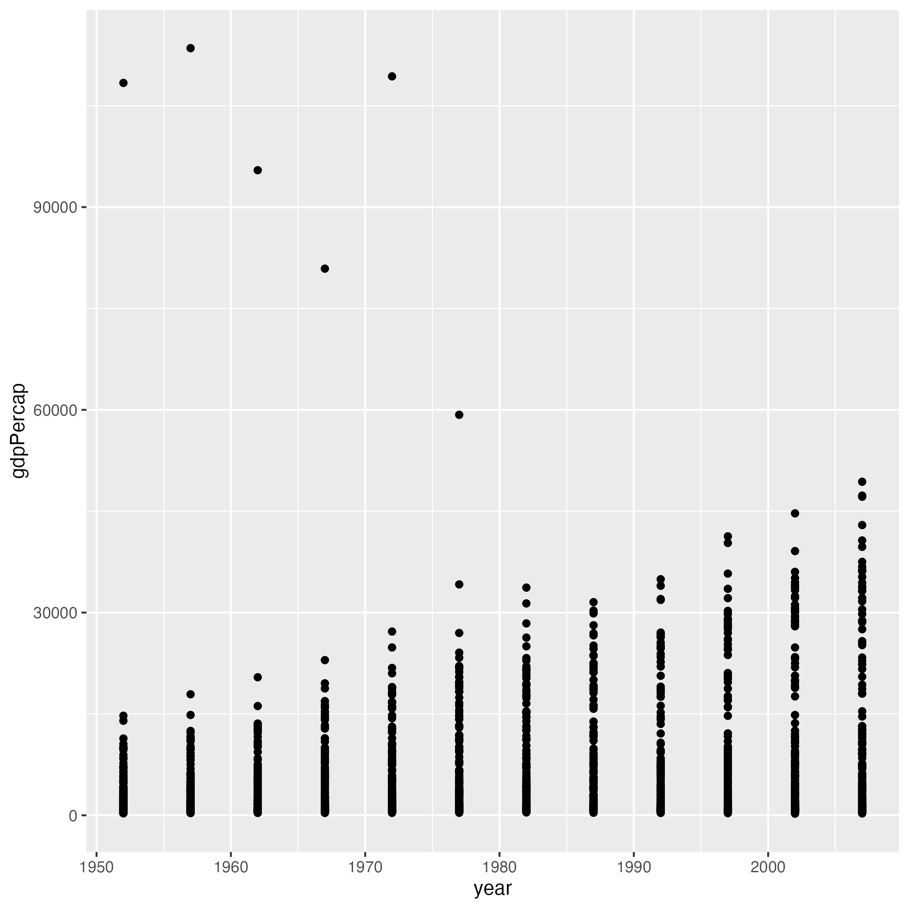
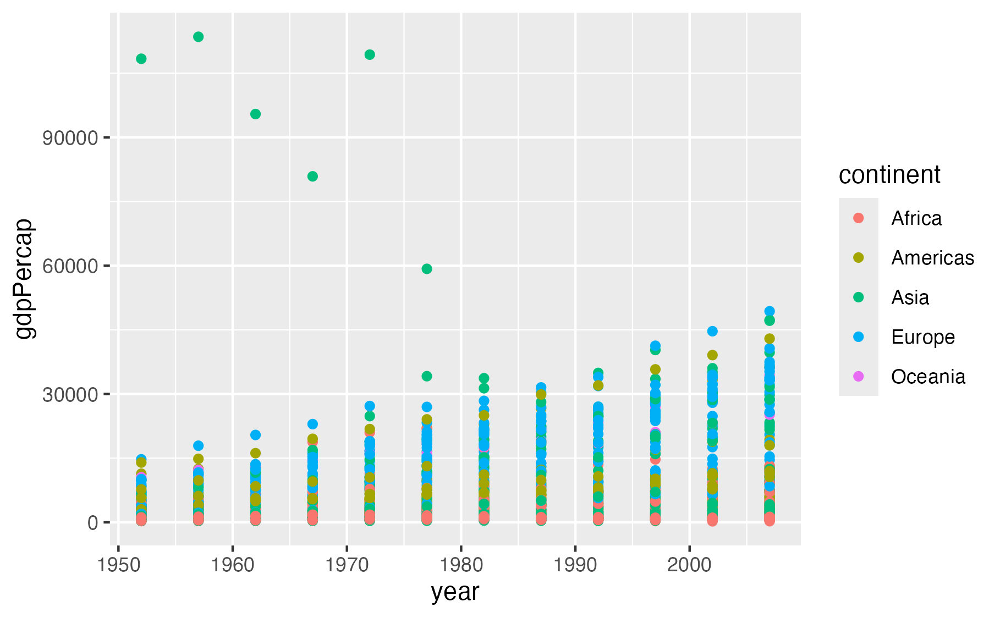
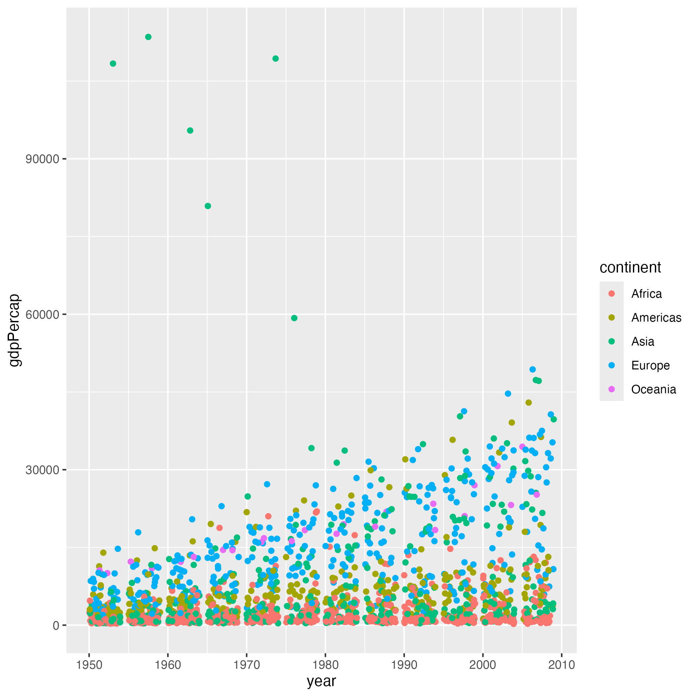
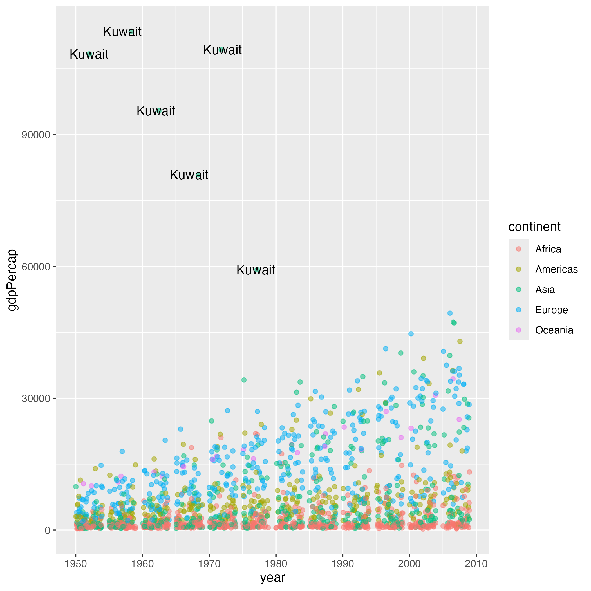
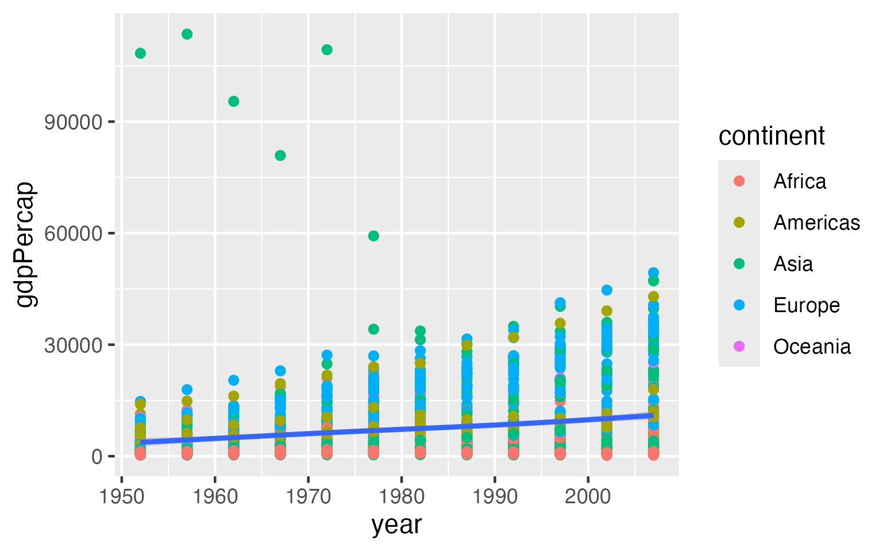
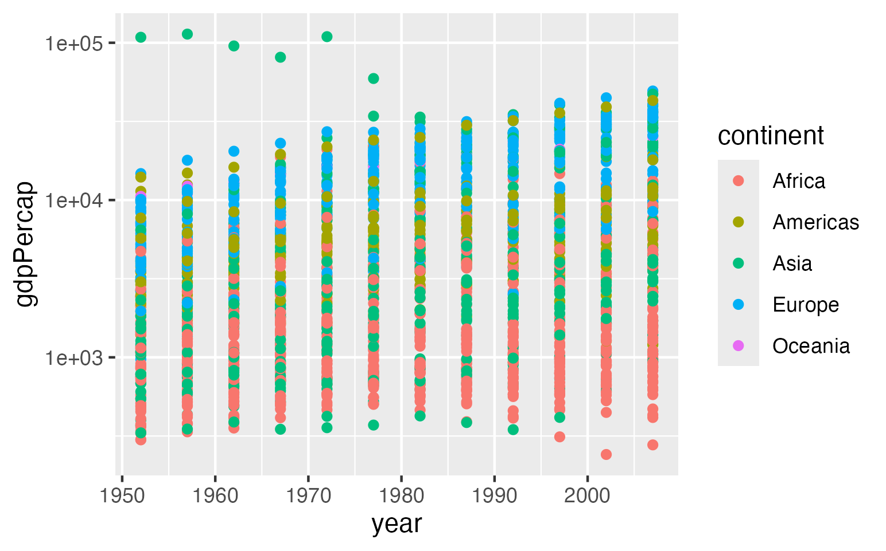

All in One View
Content from Introducing LLMs as a Tool to Learn R
Last updated on 2026-08-27 | Edit this page
Estimated time: 25 minutes
Overview
Questions
- What do I want to learn?
- What AI chatbots are available to me?
- How do I get started with R?
Objectives
- Identify your learning goals
- Choose an AI chatbot
- Understand the basics of R
- Use R to load data
Generative AI As A Learning Tool
Generative models and agents, including LLMs, can be used to automate a wide variety of tasks, at work and in our lives. But automating a task while we are still learning how to do it can limit our learning and our ability to build up more complex and creative skill sets.
We can use AI tools to positively support our learning journey instead. In this class we will explore and practice some ways that we can use Large Language Models to inform, challenge and support us as we learn how to write software code to analyse research data.
Choosing An AI Partner
There are many popular AI models available online, including:
In addition, institutions might run their own, local copies of models like such as DeepSeek or Mistral:
Challenge : What Tools Do We Have
Do you know what Generative AI tools are available and supported in your environment?
Discuss with each other and with your instructor:
- What AI tools have you heard of?
- Which are most often used in your institution/s?
- Are there any special policies that affect your choice?
- Can you access your tool of choice right now?
Consult with your instructor on which LLMs are appropriate to use today and open a session.
Getting Started with R
Why learn R?
We’ll use R in this lesson to practice running code and asking an AI chatbot for help. While we don’t aim to provide a comprehensive introduction to R, there are several reasons why R is a good choice:
- R does not involve lots of pointing and clicking, and that’s a good thing
- R code is great for reproducibility
- R is interdisciplinary and extensible
- R works on data of all shapes and sizes
- R produces high-quality graphics
- R has a large and welcoming community
This list and significant amounts of the content below have been adapted from Data Analysis and Visualisation in R by Southampton Research Software Group licensed CC BY 4.0. For more information, check out the original lesson as well as Data Analysis and Visualization in R for Ecologists and R for Reproducible Scientific Analysis.
What is R? What is RStudio?
The term “R” is used to refer to both the programming
language and the software that interprets the scripts written using
it.
RStudio is a very popular way to not only write R scripts but also to interact with the R software. To function correctly, RStudio needs R and therefore both need to be installed on your computer.
Knowing your way around RStudio
Let’s start by learning about RStudio, which is an open-source Integrated Development Environment (IDE) for working with R.
We will use RStudio IDE to write code, navigate the files on our computer, inspect the variables we are going to create, and visualize the plots we will generate.

RStudio is divided into 4 “Panes”: the Source for your documents containing code (aka “scripts”; top-left, in the default layout), your Environment/History (top-right) which shows all the objects in your working space (Environment) and your command history (History), your Files/Plots/Packages/Help/Viewer (bottom-right), and the R Console (bottom-left). The placement of these panes and their content can be customized (see menu, Tools -> Global Options -> Pane Layout).
R Basics
Running commands
You can get output from R by typing math in the console:
R
3 + 5
OUTPUT
[1] 8R
12 / 7
OUTPUT
[1] 1.714286Assigning values to objects
However, to do useful and interesting things, we need to assign values to objects and name them through variables.
A value is a piece of information that we want to store and retrieve at some later time, i.e. a number, a sequence of numbers, or even collections of data, for now we will start with numbers and later move onto collections of numbers which in R are called vectors.
An object is programming speak for a thing with known properties. You can think of an object as a box with a label, holding the value inside.
A variable is a name that refers to an object. You can use
any name such as x, current_temperature, or
subject_id but we recommend keeping object names explicit
and not too long.
To create an object, we need to give it a name followed by the
assignment operator <-, and the value we want to give
it:
R
weight_kg <- 55
<- is the assignment operator. It assigns values on
the right to objects on the left. So, after executing
weight_kg <- 55, the value of weight_kg is
55. The arrow can be read as 55 goes into
weight_kg.
What is my object?
Once an object is created there are two ways we can get information about that object:
Environment tab – In the Environment tab in the top right of RStudio, ‘weight_kg’ has the type numeric length 1 and value 55. Make sure to keep an eye on the other values that appear here when using RStudio to understand what objects you have. This tab is great for small variables, when inspecting larger or more complicated objects it is better to use more advanced methods we will cover later on.
Print command – When assigning a value to an object, R does not print anything. You can force R to print the value by using parentheses or by typing the object name:
R
weight_kg <- 55 # doesn't print anything
(weight_kg <- 55) # but putting parenthesis around the call prints the value of `weight_kg`
weight_kg # and so does typing the name of the object
Load Data
Gapminder provides data to help people better understand global macrotrends. We’ll use a subset from the gapminder package that contains six variables:
| Column | Description |
|---|---|
| country | |
| year | |
| pop | total population |
| continent | |
| lifeExp | life expectancy at birth |
| gdpPercap | per-capita GDP |
We are going to use the R function download.file() to
download the CSV file that contains the gapminder data. Lets investigate
the download.file() function.
In the R console type help( download.file ) and then
look at the help view that will open on the bottom right. We can see a
description and a list of arguments. We need the first two,
url and destfile.
- url: A character string giving a source URL for the data we use “https://swcarpentry.github.io/r-novice-gapminder/data/gapminder_data.csv”.
- destfile: A character string (or vector) denoting the destination and name for the downloaded data we use “gapminder_data.csv”.
R
download.file(url = "https://swcarpentry.github.io/r-novice-gapminder/data/gapminder_data.csv",
destfile = "gapminder_data.csv")
You are now ready to load the data! We use read.csv() to
load the content of the CSV file as an object of class
data.frame, we can again use help( read.csv )
to learn about the arguments. This time we just need the first argument
file which we give the location of the file
i.e. destfile from before.
R
gapminder <- read.csv( "gapminder_data.csv" )
This statement doesn’t produce any output because, as you might recall, assignments don’t display anything. If we want to check that our data has been loaded, we can check the environment pane in RStudio.
To check the top (the first 6 lines) of this data frame we use the
function head():
R
head( gapminder )
OUTPUT
country year pop continent lifeExp gdpPercap
1 Afghanistan 1952 8425333 Asia 28.801 779.4453
2 Afghanistan 1957 9240934 Asia 30.332 820.8530
3 Afghanistan 1962 10267083 Asia 31.997 853.1007
4 Afghanistan 1967 11537966 Asia 34.020 836.1971
5 Afghanistan 1972 13079460 Asia 36.088 739.9811
6 Afghanistan 1977 14880372 Asia 38.438 786.1134Quickly explore the dataset using the summary()
function:
R
summary( gapminder )
OUTPUT
country year pop continent
Length:1704 Min. :1952 Min. :6.001e+04 Length:1704
Class :character 1st Qu.:1966 1st Qu.:2.794e+06 Class :character
Mode :character Median :1980 Median :7.024e+06 Mode :character
Mean :1980 Mean :2.960e+07
3rd Qu.:1993 3rd Qu.:1.959e+07
Max. :2007 Max. :1.319e+09
lifeExp gdpPercap
Min. :23.60 Min. : 241.2
1st Qu.:48.20 1st Qu.: 1202.1
Median :60.71 Median : 3531.8
Mean :59.47 Mean : 7215.3
3rd Qu.:70.85 3rd Qu.: 9325.5
Max. :82.60 Max. :113523.1 - Choosing which and when to use Generative AI tools require thoughtful goal-setting
- R and RStudio provide a reasonable entry point with a large and welcoming community
- The Gapminder dataset contains global metrics for data analysis
Content from Writing Effective AI Prompts
Last updated on 2026-09-07 | Edit this page
Estimated time: 55 minutes
Overview
Questions
- What should I include in a prompt?
- How does context affect responses?
- How can AI help me understand code?
- How can AI help me write code?
Objectives
- Practice interacting with an AI chatbot
- Use ggplot2 to plot data
- Explain why follow-up questions are essential to learning
Note: some of the material in this episode was drafted with assistance from generative AI tools. All content was reviewed and approved for inclusion by at least one human.
Starting A Conversation
An Unpredictable World
Most computer programs are deterministic. Given the same input, they will always produce the same output. So in most software lessons, you can expect the same result when you type along with the instructor.
Generative AI is not deterministic, it is probabilistic, so can produce different results from the same input.
As a result, this class will depend on you and your interaction with your LLM of choice. The instructor can guide and direct you, but the experience is not “right or wrong”.
Imagine that you are an early career researcher. You have spent several months carefully collecting data. But you are now under deadline pressure to analyse the data and produce figures for your next paper. You need to write a script to load the dataset, calculate some statistics and produce visualisations, but you have no idea how to proceed.
Exercise
Open a LLM chat window in your web browser, type in and submit the prompt:
Teach me to code
Look at the output generated by the LLM and reflect on the questions:
- Is the response meaningful and useful?
- Does the response suggest leanring paths for the language you want to learn?
- Can you identify what you would need to learn to solve your specific data analysis problem?
Many LLMs produce comprehensive and helpful answers to this prompt. However the responses are very general. At the time of writing, Microsoft Copilot, for example, proposes a 7 month curriculum for learning data science. It also proposes learning paths specifically for Python and Javascript. If you are interested in R or other data science languages, this might not be the most helpful approach.
Some More Precision
LLMs are trained on a large variety of texts, and can produce an endless array of possible responses to prompts. In order to generate the most useful response, we need to submit as clear and expressive a prompt as possible. The previous prompt had promising output, but was too general. Let’s try something more specific.
The Value of Context
When asking questions to an AI chatbot, providing adequate context is essential for getting useful answers. Without context, even a simple question can be ambiguous or impossible to answer correctly. Let’s explore this with a hands-on exercise.
In the previous episode, we loaded the gapminder dataset and explored
it using head(). Notice how the years are sub-sampled to
every five years.
OUTPUT
country year pop continent lifeExp gdpPercap
1 Afghanistan 1952 8425333 Asia 28.801 779.4453
2 Afghanistan 1957 9240934 Asia 30.332 820.8530
3 Afghanistan 1962 10267083 Asia 31.997 853.1007Now let’s see how an AI chatbot responds when we ask questions about this data, with and without proper context.
A Question Without Context
Open your AI chatbot of choice such as https://google.com/ai in a new browser window. Type and submit this prompt exactly as written:
How many years are available?Look at the response. What did the chatbot say? Does it answer our question about the gapminder dataset?
Without context, most chatbots will ask for clarification or give a generic response. For example, you might see something like: “It looks like your question is missing some context. Could you tell me what you’re referring to?”
Adding Some Context
Now try adding some context. Submit this prompt:
How many years are available in gapminder?How does this response differ from the first? Is the answer consistent with what you know about the dataset?
When you mention “gapminder”, the chatbot has some context, but it may still be ambiguous. Gapminder is both a foundation that publishes data (with datasets spanning over 300 years of history) and the name of popular R and Python packages. The chatbot might tell you about either one, or ask which you mean.
Being Specific
Finally, be even more specific. Submit this prompt:
How about in
https://swcarpentry.github.io/r-novice-gapminder/data/gapminder_data.csv?Does the AI chatbot have enough context now? Depending on the AI chatbot, it may be able to read the contents of the file at the URL.
Look closely at this last prompt and see what context is and is not in the prompt. While the specific dataset is in the prompt, the specific question that you are asking is not in the prompt but in a previous prompt. This demonstrates that earlier parts of your conversation can contribute context.
Challenge: Critically evaluate AI responses
After being provided with the specific URL to the Software Carpentry gapminder CSV file, the chatbot could give you a precise answer. The dataset contains 12 specific years: 1952, 1957, 1962, 1967, 1972, 1977, 1982, 1987, 1992, 1997, 2002, and 2007 (data recorded at 5-year intervals).
How can you validate the response?
Recall from the previous episode that we can explore our data in R
using the summary() function. Here we use $ to
subset the year column:
R
summary(gapminder$year)
OUTPUT
Min. 1st Qu. Median Mean 3rd Qu. Max.
1952 1966 1980 1980 1993 2007 Another useful function is unique() to see all unique
years:
R
unique(gapminder$year)
OUTPUT
[1] 1952 1957 1962 1967 1972 1977 1982 1987 1992 1997 2002 2007Key Takeaway
This exercise demonstrates a fundamental principle of effective AI prompting: the more specific context you provide, the more likely that the response will be useful.
When working with AI chatbots to help you learn or write code, remember to include:
- What programming language you are using
- What dataset or data structure you are working with
- What you are trying to accomplish
- Any relevant details about your specific situation
A vague question like “How do I make a plot?” will get a very different (and often less helpful) response than “How do I make a scatter plot of year vs GDP per capita using ggplot2 in R with the gapminder dataset?”
Laying a Foundation
Before we ask an AI chatbot to help us create any code, let’s first create a simple visualization manually. This will give us a foundation to build on in the activities that follow.
You might wonder why we’re creating a plot ourselves before asking AI for help. There are a few important reasons:
- Building foundational knowledge: Understanding the basics helps you evaluate AI-generated code more effectively.
- Recognizing correct output: If you know what a working plot looks like, you can tell when something has gone wrong.
- Asking better questions: Knowing the basic structure of ggplot2 code helps you ask more specific, effective questions to the AI.
Confirm Your Data is Loaded
In the previous episode, we downloaded and loaded the gapminder dataset. Let’s confirm it’s still available in our R session by running:
R
head( gapminder )
OUTPUT
country year pop continent lifeExp gdpPercap
1 Afghanistan 1952 8425333 Asia 28.801 779.4453
2 Afghanistan 1957 9240934 Asia 30.332 820.8530
3 Afghanistan 1962 10267083 Asia 31.997 853.1007
4 Afghanistan 1967 11537966 Asia 34.020 836.1971
5 Afghanistan 1972 13079460 Asia 36.088 739.9811
6 Afghanistan 1977 14880372 Asia 38.438 786.1134If you get an error saying gapminder is not found, go
back to Episode 1 and follow the instructions to reload the data.
Install and Load ggplot2
We are going to use the ggplot2 package to create
visualizations of our data. The “gg” in ggplot2 stands for “grammar of
graphics”, a framework which provides a consistent vocabulary for
building plots step by step. You can learn more at https://ggplot2.tidyverse.org.
First, we need to install the package. Run this command in your R Console pane:
R
install.packages( "ggplot2" )
Once installed, load the package into the current R session using the
library() function:
R
library( "ggplot2" )
Create a Scatter Plot
Now we’re ready to create our first plot! We’ll make a scatter plot
showing how GDP per capita (gdpPercap) has changed over
time (year).
Type the following code into the R Console pane and run it:
R
ggplot( gapminder, aes( year, gdpPercap ) ) +
geom_point()
You should see a scatter plot appear in the Plots pane of RStudio, with year on the x-axis and GDP per capita on the y-axis.
Challenge: Observe Your Plot
Take a moment to look at the plot you just created. Consider these questions:
- What patterns do you notice in the data?
- Are there any outlier points that stand out?
- What do you think those high values of GDP per capita might represent?

Looking at the plot, you might notice:
- There appears to be a general upward trend in GDP per capita over time.
- There are several outlier points in the earlier years.
- The high GDP values likely represent countries with significant natural resources or developed economies.
Understanding the Pieces
Now that you’ve created a plot and observed its output, let’s use an AI chatbot to help us understand exactly what each part of the code is doing. Using AI to explain code can personalize your learning and help build your ability to read and modify code independently.
Ask the Chatbot to Explain the Code
Open your AI chatbot and submit the following prompt:
This is my first time using R. Explain what this code does line by line:
ggplot( gapminder, aes( year, gdpPercap ) ) +
geom_point()Read through the explanation carefully. The chatbot should describe:
- What
ggplot()does and what its parameters mean - What
aes()stands for and its role in mapping data to visual properties - Why we use
+to connect the parts - What
geom_point()does
Ask Follow-up Questions
One great way to use AI chatbots for learning is to ask follow-up questions. After starting the conversation and setting the context, you can dig deeper into anything that wasn’t clear.
Choose one or more of these follow-up questions to ask your chatbot. Or, if something else from the explanation confused you, ask about that instead!
- How does ggplot know to plot
yearon the x-axis and not the y-axis? - Help me better understand the difference between a parameter (variable) and an argument (value) for a function?
- Why does ggplot use
+instead of something like a comma? - What’s the difference between putting
aes()insideggplot()versus insidegeom_point()?
Comparing Our Experiences
Share your experience with the group:
Compare responses: Did everyone’s chatbot cover the same key points? Did anything unexpected happen?
Clarity check: How much of the explanation made sense to you? Are there terms or concepts that are still confusing?
Follow-up discoveries: What did you learn from your follow-up questions? Did any answers surprise you or change how you understand the code?
Here are some insights you might learn from the follow-up questions:
Overall: A detailed explanation should mention that
ggplot() initializes the plot with data if provided,
aes() maps variables to visual properties (x and y axes),
+ connects layers together, and geom_point()
creates a scatter plot.
On axis assignment: In aes(), the first
unnamed argument is mapped to x and the second to
y. You could also write
aes( x = year, y = gdpPercap ) to be more explicit.
On using +: The + operator
in ggplot2 is used to add layers to a plot. It’s different from the pipe
operator (%>% or |>) because it’s
specifically designed for building up plots piece by piece. Think of it
as “adding” a layer on top of your base plot.
On aes() placement: When
aes() is in ggplot(), those mappings apply to
all layers. When aes() is in a specific geom like
geom_point(), those mappings only apply to that layer. This
becomes important when you have multiple geoms in the same plot.
Building On Your Work
Now that we have a plot and understand its basic structure, let’s use an AI chatbot to modify it. We’ll repeat this pattern often: start with code, ask for changes, review the code, test the code.
Engineering a Modification Prompt
When asking AI to modify code, avoid vague prompts like “make my plot better” or “fix this code.” These prompts rarely give useful results because the AI doesn’t know what “better” means to you.
A good modification prompt to start with includes four key elements:
- Your experience level — help the AI choose appropriate language and complexity
- The original working code — give the AI something concrete to modify
- A specific change you want — tell the AI exactly what to do
- A request for explanation — learn how code works, don’t just copy
Here’s a template that combines these elements:
This is my first time using R. Modify this code in the simplest way
possible so that [describe your specific change]. Explain what the
changes do.
[paste your code here]By asking for “the simplest way possible,” you encourage the AI to make minimal changes. This can help make it easier to understand exactly what changed and why.
Try It Out! Color Points by Continent
Let’s use this template to make a specific modification to our gapminder plot. Color the points according to which continent each country belongs to.
Open your AI chatbot and submit the following prompt:
This is my first time using R. Modify this code in the simplest way
possible so that the points are colored by continent. Explain what
the changes do.
ggplot( gapminder, aes( year, gdpPercap ) ) +
geom_point()Read the response carefully. The AI should explain that adding
color = continent inside the aes() function
maps the continent variable to the color of each point. Your modified
code should look something like this:
R
ggplot( gapminder, aes( year, gdpPercap, color = continent ) ) +
geom_point()
Here is one possible explanation that you might get from a chatbot (in this case ChatGPT):
What changed?
color = continenttells ggplot2 to use the continent column to determine the color of each point.- Because continent is a categorical variable (such as “Asia”, “Europe”, etc.), ggplot2 automatically gives each continent a different color.
- Everything else stays the same: year is still on the x-axis, and gdpPercap is still on the y-axis.
You’ll also automatically get a legend showing which color corresponds to each continent.
Copy the code from the AI response into your R Console pane and run it. You should see a scatter plot where each continent appears in a different color, with a legend automatically added to the right side.

Make More Modifications
Using the prompt template, ask the AI to make one of the following modifications to your plot. Pick whichever sounds most interesting to you:
Spread out the dots so they don’t overlap as much
Label the outlier countries with high GDP
Add a trend line showing the overall pattern
Change the y-axis to a logarithmic scale
After you get a response:
- Read the explanation to understand what changed
- Run the code in RStudio to verify it works
- Compare your result with a neighbor to see if you get similar code and plots
Here are examples of what the AI might suggest for each modification:
Spreading out overlapping points using
geom_jitter():
R
ggplot( gapminder, aes( year, gdpPercap, color = continent ) ) +
geom_jitter()

Labeling outlier countries using
geom_text():
R
ggplot( gapminder, aes( year, gdpPercap, color = continent ) ) +
geom_point() +
geom_text( data = subset( gapminder, gdpPercap > 50000 ),
aes( label = country ),
color = "black" )

Adding a trend line using
geom_smooth():
R
ggplot( gapminder, aes( year, gdpPercap ) ) +
geom_point( aes( color = continent ) ) +
geom_smooth()

Using a logarithmic y-axis with
scale_y_log10():
R
ggplot( gapminder, aes( year, gdpPercap, color = continent ) ) +
geom_point() +
scale_y_log10()

The code your AI chatbot generates may differ slightly in style or syntax, but should produce similar results. If your code doesn’t work, copy the error message back to the AI and ask it to fix the problem.
- Providing context such as programming language, dataset, and goals can lead to better AI responses
- Follow-up questions help personalize learning and deepen understanding
- Modify code by starting with code, asking for changes, reviewing the code, and testing the code
Content from Analysing a Real Program
Last updated on 2026-09-29 | Edit this page
Overview
Questions
- What are some good strategies to learn from code that I did not write myself?
- How can I use a chatbot to help build my own understanding of how code works?
Objectives
After following this episode, learners will be able to…
- Run a block of code.
- Trace the flow of a block of code.
- Make small modifications to a block of code and observe how its behaviour changes.
- Prompt a chatbot for an explanation of a line or block of code.
Understanding Existing Code
The code below generates a set of line plots showing how average life expectancy has changed over time in countries in the Americas, which are then saved to image files in an output directory.
R
library(ggplot2)
plot_life_expectancy <- function(df, country, outdir="results") {
lifeExp_plot <- ggplot(data = df[df$country == country,], mapping = aes(x = year, y = lifeExp)) +
geom_line()
ggsave(filename = paste0(outdir, "/", country, "_lifeExp.png"), plot = lifeExp_plot, width = 12, height = 10, dpi = 300, units = "cm")
}
gapminder <- read.csv('gapminder_data.csv')
americas <- gapminder[gapminder$continent == "Americas",]
for (country in unique(americas$country)) {
plot_life_expectancy(americas, country)
}
There is a lot to understand in these eleven lines and, if you have never written any code before, it can feel overwhelming to be presented with a program like this. If we are going to generate our code with AI instead of writing it line-by-line, inspecting a lot of code is the trade we make in exchange for the increased speed of writing. It may be tempting to assume that AI-generated code is correct. But we have a responsibility to ensure that the results produced by our code are correct. A key skill we need to develop is the ability to trace the execution of code, to understand how information flows through the program and what might be done to it along the way. By practicing this skill, we can develop our ability to review code that has been generated.
Reverse-Engineering
Time worn strategies for understanding what a chunk of code is doing are to a) run it, and b) mess around with it! It is helpful to spend some time doing this even if you plan to generate all of your code with AI.
If the code we want to understand is part of a larger program, we can copy out a line or chunk and run it.
Think before you run the code
A good habit to get into, to help you learn how to read code, is to try to predict what the output of some code will be before you run it. Comparing the results against your prediction will help you spot and correct any misconceptions you might have picked up.
R
unique(americas$country)
OUTPUT
[1] "Argentina" "Bolivia" "Brazil" "Canada" "Chile"
[6] "Colombia" "Costa Rica" "Cuba" "Dominican Republic" "Ecuador"
[11] "El Salvador" "Guatemala" "Haiti" "Honduras" "Jamaica"
[16] "Mexico" "Nicaragua" "Panama" "Paraguay" "Peru"
[21] "Puerto Rico" "Trinidad and Tobago" "United States" "Uruguay" "Venezuela" R Studio Makes This Easier
Working in R Studio, you can also select some of the code and press the “Run” button to run only that selection. This works for multiple lines, a single line, or even part of a line.
Making a small adjustment to the code before running it again is another good way to build and test your understanding.
R
unique(americas$continent)
OUTPUT
[1] "Americas"As long as you do this on a copy, you can always recover the original version. And you can learn a lot about how a program works through this kind of reverse-engineering.
Let’s do this again to explore what the paste0(...) part
is doing:
R
paste0(outdir, "/", country, "_lifeExp.png")
ERROR
Error: object 'outdir' not foundThis error message tells us that we cannot run that section of the
code on its own: outdir is a variable that gets
assigned a value in the code, and that value is then used in the
paste0 function in some way (country
is another variable). When we run the whole program, these variables are
being created and assigned a value. But when we try to run the function
in isolation, they are not. So we need to also define the variables, or
replace them with values directly.
R
# option 1: assign values to the variables
outdir <- "output_directory"
country <- "germany"
paste0(outdir, "/", country, "_lifeExp.png")
OUTPUT
[1] "output_directory/germany_lifeExp.png"R
# option 2: replace the variables with literal values
paste0("output_directory", "/", "germany", "_lifeExp.png")
OUTPUT
[1] "output_directory/germany_lifeExp.png"Paths
In our program, the output of this paste0 function call
is used as the name of the image file created to store the data
visualisation. output_directory/germany_lifeExp.png is the
relative path of the image file that will be created. Paths are
the way that programs describe locations on the computer’s filesystem,
and there are two types: relative paths and absolute paths. A
relative path defines a location on the filesystem relative to your
current location, whereas an absolute path describes its location
from the root of the filesystem.
The filesystem is a tree-like structure branching out from the root:

The root folder is referred to as /, with more
forward-slashes used to indicate levels of the filesystem. For example,
/Users/nelle describes the absolute path of the user
nelle’s home directory. From Nelle’s directory, a relative
path to user imhotep’s home directory would be
../imhotep, where .. means “up one level”.
Paths can take a bit of getting used to! Software Carpentry’s lesson The
Unix Shell is a good resource for learning more about them.
Peeking Inside The Machine
While doing the kind of reverse-engineering we described above, we
may want to keep track of the values that particular variables hold and
how those change while the code is running. While advanced “debugger”
tools exist to do this more rigorously, a lot of beginners and
experienced programmers take a less sophisticated but more accessible
approach: telling the program to report what things look like while it
runs. This is done with the print function:
R
for (country in unique(americas$country)) {
print(country)
plot_life_expectancy(gapminder, country)
}
OUTPUT
[1] "Argentina"
[1] "Bolivia"
[1] "Brazil"
[1] "Canada"
[1] "Chile"
[1] "Colombia"
[1] "Costa Rica"
[1] "Cuba"
[1] "Dominican Republic"
[1] "Ecuador"
[1] "El Salvador"
[1] "Guatemala"
[1] "Haiti"
[1] "Honduras"
[1] "Jamaica"
[1] "Mexico"
[1] "Nicaragua"
[1] "Panama"
[1] "Paraguay"
[1] "Peru"
[1] "Puerto Rico"
[1] "Trinidad and Tobago"
[1] "United States"
[1] "Uruguay"
[1] "Venezuela"These print lines can be commented out and in as needed
while you experiment with your code, and you can delete them when you
are done.
Keep Exploring
Referring to the example code block at the top of this episode, find another part of the code that you would like to understand better.
- What do you think it is doing?
- How could you isolate and modify that part of the code to find out whether your prediction is correct?
Try making these changes and reflect on whether or not your expectations were correct.
You might choose to look at how the name of the output file changes
as the program runs. To do that, we need to edit the
plot_life_expectancy function that is run in loop. Unlike
built-in functions like print and unique,
which exist in R by default, plot_life_expectancy is
defined in our program.
R
plot_life_expectancy <- function(df, country, outdir="results") {
lifeExp_plot <- ggplot(data = americas[americas$country == country,], mapping = aes(x = year, y = lifeExp)) +
geom_line()
ggsave(filename = paste0(outdir, "/", country, "_lifeExp.png"), plot = lifeExp_plot, width = 12, height = 10, dpi = 300, units = "cm")
}
It is then run in the for loop, once for each country in
the Americas, with the country parameter changing each
time.
R
for (country in unique(americas$country)) {
plot_life_expectancy(gapminder, country)
}
To look at how the name of the output file used in that function
changes each time, we need to tell our function to print out the result
of paste0:
R
plot_life_expectancy <- function(df, country, outdir="results") {
lifeExp_plot <- ggplot(data = americas[americas$country == country,], mapping = aes(x = year, y = lifeExp)) +
geom_line()
print(paste0(outdir, "/", country, "_lifeExp.png"))
ggsave(filename = paste0(outdir, "/", country, "_lifeExp.png"), plot = lifeExp_plot, width = 12, height = 10, dpi = 300, units = "cm")
}
This print will be run every time the
plot_life_expectancy function is called, so we will see it
for each country as the loop progresses:
R
for (country in unique(americas$country)) {
plot_life_expectancy(gapminder, country)
}
OUTPUT
[1] "results/Argentina_lifeExp.png"
[1] "results/Bolivia_lifeExp.png"
[1] "results/Brazil_lifeExp.png"
[1] "results/Canada_lifeExp.png"
[1] "results/Chile_lifeExp.png"
[1] "results/Colombia_lifeExp.png"
[1] "results/Costa Rica_lifeExp.png"
[1] "results/Cuba_lifeExp.png"
[1] "results/Dominican Republic_lifeExp.png"
[1] "results/Ecuador_lifeExp.png"
[1] "results/El Salvador_lifeExp.png"
[1] "results/Guatemala_lifeExp.png"
[1] "results/Haiti_lifeExp.png"
[1] "results/Honduras_lifeExp.png"
[1] "results/Jamaica_lifeExp.png"
[1] "results/Mexico_lifeExp.png"
[1] "results/Nicaragua_lifeExp.png"
[1] "results/Panama_lifeExp.png"
[1] "results/Paraguay_lifeExp.png"
[1] "results/Peru_lifeExp.png"
[1] "results/Puerto Rico_lifeExp.png"
[1] "results/Trinidad and Tobago_lifeExp.png"
[1] "results/United States_lifeExp.png"
[1] "results/Uruguay_lifeExp.png"
[1] "results/Venezuela_lifeExp.png"All of this experimentation is likely to have helped you develop your understanding of how information flows through the program. This ability to trace the flow of code, understanding how variables are handled and how their values change as the program runs, is a vital skill. Even if the code itself is generated with AI – or written by somebody else! – building your own mental model of what it does and how will help you ensure that the results it produces are correct.
Go With The Flow
Using pencil and paper, https://tldraw.com, or another tool, draw a flow chart describing the execution of the program in the code block at the top of this episode.
Getting Unstuck
Manually reverse-engineering code will not always help you, though,
and you can expect to get stuck from time to time. For example, what
happens if we run the library(ggplot2) part of the example
code in isolation?
R
library(ggplot2)
After a short pause (a sign that something is happening),
the prompt returns but we get no additional output. This is difficult to
interpret! We might try adding a call to print afterwards,
but that doesn’t seem to help:
R
library(ggplot2)
print(ggplot2)
ERROR
Error: object 'ggplot2' not foundWe could also adjust the code and re-run it, to see what happens:
R
library(fgplot2)
ERROR
Error in library(fgplot2) : there is no package called ‘fgplot2’This gives us some more information, but how helpful it is will depend on our prior knowledge of the concepts and technical terminology of the R language. If we do not already know what a package is, the error message is of limited use.
R provides a built-in help function. We can use it to
view the documentation of a given function.
R
help(library)
These documentation pages are a rich source of information but are
usually more accessible to those already knowledgable about the
language/with more experience of coding. If help does not
give you what you need, you could try:
- Searching the internet for an answer to your question. The chances are good that (many) other people have got stuck with the same thing, asked for help, and received an answer that will be useful to you as well. Q&A forum websites like StackOverflow are particularly good sources for this kind of information.
- Ask another person, or your chatbot.
Asking for Help
Here is some advice to follow when asking for help, whether from a person or a chatbot:
- If you are encountering an error, copy and paste the error message into your message asking for help.
- Also include a copy of the code where you are having trouble and, if applicable, an example of the data you are feeding into it.
- Be specific about the task you are working on, the problem you are having (the error message may be enough), and/or what it is about the code that you do not understand.
- Unless the person or chatbot is already aware of your level of programming expertise, it can be useful to summarise that as well.
Most importantly, as it will help you build your own ability, take time to consider the response you receive. Can you understand the explanation that is being provided to you? If not, ask follow-up question(s) to fill in the gaps. Can you find a way to adjust your code to check that your understanding is correct?
AI-generated Explanations
Our chatbot can also produce explanations of what code is doing.
We recommend doing the first part of the challenge below together with the group. Have the learners follow along with you as you write and submit the prompt, then spend a few minutes discussing the output you received. Ask learners whether anyone received a substantially different response, and encourage them to share it in the collaborative notes if so.
Ask learners if the response(s) include any jargon that they are not familiar with, and help them understand the response if so.
Explain This Code
Submit the prompt below to your chatbot:
I am a novice programmer learning to code with R. Explain what this code does:
R
library(ggplot2) plot_life_expectancy <- function(df, country, outdir="results") { lifeExp_plot <- ggplot(data = df[df$country == country,], mapping = aes(x = year, y = lifeExp)) + geom_line() ggsave(filename = paste0(outdir, "/", country, "_lifeExp.png"), plot = lifeExp_plot, width = 12, height = 10, dpi = 300, units = "cm") } gapminder <- read.csv('gapminder_data.csv') americas <- gapminder[gapminder$continent == "Americas",] for (country in unique(americas$country)) { plot_life_expectancy(americas, country) }
Consider the response you received:
- Does the explanation provided match your own understanding of the code? If there are inconsistencies between your mental model of the code and the explanation in the response, can you identify a way of testing whether your understanding or the explanation is correct?
- Is the level of detail included in the response helpful? Are there any terms or concepts used in the explanation that you do not understand?
- Can you adjust the prompt to generate a more helpful response from the chatbot? If so, paste your customised prompt into the shared notes document for the workshop.
Generating an explanation from a chatbot is probably faster than exploring and reverse-engineering code to develop your understanding independently. It may also provide helpful contextual information that you would not learn through experimentation alone. But be careful about relying on this method to learn.
Hands-on experience with code will help you develop a stronger mental model of how it works. This practical application of new knowledge may help it transfer to your long-term memory, which is required for learning. Many people have experienced the sensation of understanding a written explanation in the moment, only to find that they have forgotten it when required to recall the information later.
Furthermore, explanations generated by a chatbot may include factual inaccuracies and/or irrelevant information. But they are likely to appear confident! (The same is true of answers you may find on the internet.) You are responsible for the code generated on your behalf, and a chatbot cannot be held accountable for any damage caused by the code it produces. Since that code can be powerful – editing the files on your computer, interacting with other people’s servers online, analysing masses of research data, etc – some scepticism is healthy.
Uncertainty
You may find it possible to adjust the way that uncertainty is handled by some more recent versions of chatbots. For example, by adding something like the below to your prompt:
Mention when you are uncertain about something in your response, instead of confidently glossing over it.
This can help you to avoid being led astray by something in a generated response. But we still encourage you to verify everything that you get back from a chatbot, especially if the consequences of it being wrong could be serious! Remember that you will build your own expertise by testing things out for yourself.
By learning the basics of coding and giving yourself a framework with which you can continue to develop your own expertise, we hope to equip you with what Cory Doctorow refers to as discernment: the ability to distinguish useful AI outputs from unhelpful/misleading responses.
To ensure that you continue to learn as you work through this lesson and afterwards, some good habits to get into are:
- Before you ask a question or request some code, think about what you expect the answer to be or the response to look like.
- Compare the response generated to that expectation. If the result you get is unexpected, spend some time thinking about what is different and why that could be.
- Try to find ways to adjust the code that will test your understanding: “if x, then y should happen if I make z change to this part of the code.”
If you find that you seem to have misunderstood something, prompt the chatbot with a description of what you have changed/what you are trying to do, what you expected to happen, what actually happened, and ask for clarification. Ask “what am I missing?” rather than “fix it for me” to develop your own expertise.
Test Your Understanding
Review the response generated from your prompt in the previous exercise (Explain This Code) and identify one part of the explanation that you understand. Devise a way to adjust the code so that you can test whether your understanding is correct, then make that change to the code and check whether you were right.
How Much Is Too Much?
While you are beginning to develop your own programming expertise, we recommend that you avoid passing large chunks of code and whole programs to the chatbot and asking for an explanation. You may expect that this will save you time but it will be harder for you to develop your own understanding of the code. It is easier to trace execution through a handful of lines than through hundreds.
And it is easier to process and consider the explanation of a handful of lines that one of hundreds. If you provide a large volume of code to the chatbot, a detailed explanation will be very long while a less thorough summary of the code may explain things at a level too high to really build your understanding of how the code works.
Managing your cognitive load by keeping explanations short and taking regular opportunities to test your understanding will aid your learning. This will seem slow at first but, as you continue to learn, you will be able to move more quickly and spend less time studying the code in detail.
- “Reverse-engineering” existing code and inserting
printstatements can help you develop your understanding of how code works. - Develop your own expertise by comparing a chatbot’s explanations to your own understanding and finding practical ways to test the explanations.
Content from Learning About Programming Concepts
Last updated on 2026-09-29 | Edit this page
Overview
Questions
- How can I get explanations when I don’t understand or recognise something?
- What can I do to reinforce my learning?
Objectives
After following this episode, learners will be able to…
- Appreciate how the use of relevant technical terminology in a prompt can influence the style and accuracy of the response generated.
- Identify some strategies to help them build a useful mental model of coding.
At the end of the previous episode, we mentioned that the responses you receive when you ask questions are likely to refer to unfamiliar concepts and terms as you learn to code. These moments are great opportunities to keep learning! How can we make best use of the chatbot to help us build our knowledge and skills?
Terminology
Like any specialism, software development has its fair share of technical jargon. Getting oriented with the terminology takes effort but can be very helpful. Just like when composing search terms to maximise the chances of finding what you are looking for, including the appropriate technical terms in your prompts to a chatbot will increase the likelihood that the response generated is specific, relevant, and helpful.
Choose Your Words Carefully
In a new chat, prompt your chatbot with the following question:
What is a vector?
If the response generated explains vectors as a mathematical concept, follow up to specify that you are interested in learning about vectors in programming.
What is a vector in programming?
Then, even more specifically:
What is a vector in R?
Can you follow the explanation provided in the response generated from this prompt? Make a list of every technical term in the explanation and split that list into three categories: those terms/concepts that you feel you already understand well; those that you feel you understand a little; and those that you have not encountered before/have no understand of.
Avoid Rabbit Holes
Chatbot responses will often include follow-up questions to narrow down queries that are too general. It can be helpful to answer these but you should use your own judgement to decide whether or not they will take you in the direction you want to go with your learning. It is very easy to go too deep on this kind of exploration, especially when you are first starting out. This can result in a sense of becoming overwhelmed by so much new information, and/or losing sight of what you wanted to learn about in the first place.
As a novice, it can be difficult to tell the difference between something that would be helpful to know at this stage of learning (vectors can only contain one type of data) and the things that are too much information right now (elements in a character vector are pointers to R’s global string cache). You may find that you need to keep “reminding” your chatbot about your current level of expertise in order to keep the responses pitched to the right level. It can also help to ask “is understanding [technical term] necessary for me to keep learning right now?” or similar – or ask a friend or colleague the same question to help guide your learning.
Ask for Feedback
After some back-and-forth with a chatbot, you may also find it instructive to ask it how you could be using it better. This will cause the model to analyse the history of prompts and responses, and produce output that aims to capture points of friction/inefficiency and discuss how you could adjust your approach to avoid similar situations in the future. Depending on the chatbot and how you have it configured, it might be able to do this kind of analysis across all of the conversations you have had with it.
Reinforce Your Learning
You are unlikely to develop your own expertise if you limit yourself to only asking for explanations and reading/listening to the responses you receive. Relatively passive use of AI can lead to “the illusion of competence”: a false confidence in one’s understanding and ability. As Barba and Stegner explain:
It is a form of metacognitive miscalibration: in the presence of the answer, students misjudge their future performance, they have the feeling that they are learning, but in fact they are not. The same can happen with other forms of passive engagement, like sitting in a lecture, or reading and highlighting notes or the textbook. But the effect is more severe with AI tools, because they so drastically increase a person’s capacity to complete certain tasks with minimal engagement.
A better strategy to build your own skills is pursuing guided practice: applying your new knowledge and skills immediately and adjusting your approach based on targeted, constructive feedback. One way to access this guidance is to participate in interactive training settings like this workshop. Another is to engage in regular discussions with experts among your colleagues and peers. You can also adjust your prompts to influence the way that your chatbot provides new information to you.
Practice, Practice, Practice
We present you frequent exercises throughout this workshop because they are an excellent way for you to practice and get feedback as you learn. But time is usually in short supply at training events and you may be required to move on before you had enough practice to really reinforce your learning. Chatbots can generate a practically endless supply of exercises to test your understanding and skills around a given topic.
Asking for Exercises
Choose a new concept you have been introduced to in this lesson, which you would like to learn more about. For example, for loops, function definitions, or loading packages in R. Ask your chatbot to generate three exercises to test your understanding of that concept. E.g.
Challenge me with three ‘two truths and a lie’ exercises about loading packages into an R session with the library function.
Now, instead of solving the exercises it produces (save them for later if you like!), give feedback and additional information to the chatbot to help you refine your prompt so that it is most likely to produce exercises that:
- Are appropriate to your level of expertise e.g. do not require additional concepts or skills that you have not yet encountered.
- Increase in difficulty.
- Vary in format e.g. not all multiple-choice questions.
An example prompt that worked well for the lesson developers:
You are an expert instructor providing training in programming. I am an early career researcher and novice programmer, who wants to learn enough coding in R to be able to analyse my research data. So far I have encountered some basic scripting: loading data, plotting from a dataframe with ggplot2, looping through unique values in a column, defining and calling a function. Generate three exercises to help me expand and reinforce my understanding of function definitions. Do not use any concepts that I am not already familiar with, except where you want me to learn about it through the exercise itself. Each exercises should be slightly more difficult than the last, and the format of the exercises should vary i.e. not three multiple-choice questions in a row. Wait for me to provide my solution to an exercise and, if I get it wrong, give short hints or ask Socratic questions one at a time, to help me figure out where I went wrong. Do not give me the answer unless I say “I give up”.
The important thing is to spend time thinking about and completing these exercises. If you get stuck, ask your chatbot to provide hints or ask additional questions without ever giving away the solution altogether. Similarly, before you give your answer to check whether it is correct, make sure that you instruct the chatbot not to provide the correct solution if you got it wrong.
Metacognition
Metacognition is a learner’s awareness that they are learning. This awareness itself can promote learning, for example by providing additional motivation to continue. Finding opportunities to reflect on how much you have learned is a great way to reinforce that learning and encourage yourself to keep going.
For example, you might try writing a list of all of the concepts, functions, and practices that you have learned about. Or you could draw a concept map, e.g.
graph LR
A["Function Definition<br/>my_func <- function(x, y) {...}"]
B["Arguments/Parameters<br/>x, y"]
C["Return Value<br/>last expression evaluated"]
A -->|"takes"| B
B -->|"used inside body"| A
A -->|"produces"| C
B -->|"determines"| CWhat is a Concept Map?
In a concept map, concepts are draw as bubbles and connected together by lines describing the relationship(s) between those concepts. They are one way to represent our mental model of a domain, system or process. Just like any map, they do not have to be exhaustive to be useful.
If you do draw a concept map or create some other summary of your understanding, a great next step would be to share that with somebody who can give you feedback on what could be corrected or improved in your mental model, and suggestion about what to learn next. Many chatbots are able to process images, so you could also prompt yours for this kind of guidance.
Map Your Progress
Draw a concept map of (some of) the things you have learned so far in this workshop. If you have time, annotate your diagram to highlight the points where you want to test/deepen your understanding.
- Being specific about what you know already and what exactly you need to be explained will increase your chances of getting a helpful response.
- Avoid the illusion of competence by putting your knowledge and skills into practice instead of passively consuming responses from a chatbot.
Content from Modifying Code
Last updated on 2026-07-30 | Edit this page
Estimated time: 22 minutes
Overview
Questions
- FIXME
Objectives
After following this episode, learners will be able to…
- Generate a plan of steps to improve a script.
- Execute steps in this plan.
- Evaluate the impact of changes made.
- Articulate the changes the chatbot should make to extend an existing script.
- Reflect on what they are learning and what the chatbot is and is not helping with.
Using What We Have Learned
- it is time to move on from analysing code that has already been written, and begin generating new code
- the knowledge you have gained so far will help:
- conceptual understanding, “computational thinking”, and familiarity with technical terminology will help you write a prompt that is more likely to generate the code you want
- you may be more capable now of anticipating what code you will get back
- ability to trace the flow of the generated code and test+query parts you do not understand will help you evaluate the usefulness of the output (more on this in the next episode)
- back to our messy script: upload whole script to chatbot and prompt
for:
- a plan: what can be cleaned up and how?
- discuss each of these suggestions. are they all useful, relevant? if the chatbot output includes a long list and makes a distinction between recommended and optional steps – do you agree with these suggestions?
- ask the chatbot to execute one of the proposed steps, e.g. clean up variable names
- now re-run the script: is it doing the same thing as it was before?
- a plan: what can be cleaned up and how?
Then an EXERCISE, giving learners the chance to try it out again on their own, e.g. refactor code into functions * (opportunity when looking at functions to call back to earlier “analysing code” episode, where we pulled out chunks and tried them out – often, when you have finished tweaking some code and getting it to do what you want, you should capture it as a function)
- now that the script is clean, we can think about extending the
functionality.
- ask the audience how they would modify the script – what would they want it to do? e.g. adjust the script to use wildcard to capture all *.tsv files in the working directory
- spend some time writing prompt together as a group:
- what info should we include?
- how should we describe the change we want made?
- ask participants what they expect to see in the changes produced?
EXERCISE to allow participants to experiment some more
Follow-up discussion EXERCISE to find out what people learned, where they got stuck, any weird behaviour observed from the chatbot, etc?
Toby: I found myself wondering about version control as I worked on this outline: as learners get more and more into this, they are increasingly going to benefit from viewing diffs of changes being made. the commit history also helps the model (then agent) keep track of what’s been done and why, which facilitates experimentation and work spread across multiple sessions. Where and how can we gracefully introduce this stuff?
Content from Validating What We Have Made
Last updated on 2026-07-30 | Edit this page
Overview
Questions
- FIXME
Objectives
After following this episode, learners will be able to…
- Recognise that evaluation of generated code and validation of results is essential.
- Identify ways to test the code generated by a chatbot.
- Evaluate the importance of testing different parts of the code they generate.
But Is It True?
- Regardless of whether you wrote the code from scratch or generated it with AI, you will held responsible for the results it produces
- LLM models make mistakes. Perhaps not often, and especially not when
working with common libraries, functions, and tasks similar to those
that many people have done in the past.
- (Toby: not really mistakes, since “mistake” implies intent on the part of the mistake maker: “oops, I was wanted to do X but instead Y happened”)
- But, whereas a person might give you some indication when they are not confident that they are giving the right answer/good advice (“I’m not really sure but if I had to guess I would say…” or “You should really ask Jessica that question: she knows a lot more about this stuff than I do…”), the output of your chatbot will project the same confidence and positivity regardless of the relevance or factual accuracy of its response.
- It is up to you to determine whether or not the output generated is accurate and/or does what you need it to do.
- The code tracing/review skills you have picked up in this lesson
will be helpful. But looking at the code is often not enough on its own:
- Once the script/code base gets large, it becomes difficult for one person to keep a complete mental model of how it works, and how any given change will affect the functioning of the whole. (A similar problem exists for the LLM once the code base gets very large: if the size of all the relevant information exceeds the context window of the model, performance can deteriorate as the model “forgets” critical information.)
- It can also be difficult to consider the code that isn’t there. Changes generated by a model might all seem sensible by themselves, but be missing something that later turns out to be important.
- Models perform worse on unusual and niche tasks, those that are not well-represented in their training data. (Toby: find the paper that Greg W shared recently re:model performance vs a benchmark of scientific challenges.) Since research computing tasks are often concerned with questions/data at the limits of current human understanding, you should be prepared to encounter more problems than somebody generating code for more routine tasks in well-trodden territory.
What are some good validation strategies?
- Test your code!
- Minimally, run it on a small, test dataset. Check results carefully. Think first about what you expect to see, and compare the outcome with that expectation.
- Allocate your rigour: consider how crucial each part of the code is, and treat those parts accordingly. For example, routine plotting functions and other standard “boilerplate” is more likely to be generated correctly – and, in the case of the plotting code, errors might be detected quite easily. You might choose to spend less effort reviewing that code. But complex and/or crucial processing and calculations that are particular important for the results you will be reporting from your work merit a much closer look.
- Consider adding some unit tests to your code: that is, code that
tests the correctness of the other code. Programming languages typically
have at least one framework to do this, and automated code generation
has made it much easier and faster to do. Of course, you will also need
to check the tests so that you can be confident that they are correct
and/or testing the right things.
- Toby: I guess unit testing is beyond the scope of this lesson? In which case, I think we should at least point learners towards a resource where they can learn more. Or we could include at least a basic example?
- Bear in mind that scientific code may be more difficult to test: a lot of unit tests are concerned with things that are quite easily and logically testable, e.g. whether the output of a function is a positive integer, whether the function fails gracefully when provided with unexpected values, etc. But results produced by scientific code may need to be tested for their plausibility, e.g. whether they respect the laws of thermodynamics, whether a number fits within a biologically feasible range, etc. You will need to use your own domain expertise to inform this kind of evaluation, and it is worth noting that LLMs lack the kind of mental model of the world and how it works that you apply in your daily work, making them less likely to provide useful output in these cases.
- Ask the chatbot to mark its own homework. Some users have reported good results from asking the chatbot/model e.g. “did you miss anything?”. You could also try starting a new chat session or even opening up a different chatbot/model, providing some context for the project, then asking it to review the code and provide constructive feedback on how it could be improved. (Humans can also be good at this!)
Content from Crafting A Learning Path
Last updated on 2026-07-30 | Edit this page
Overview
Questions
- What am I confident that I know?
- What do I want to know but don’t yet?
- How can I ask for a strategy to master those things?
- What am I missing? What are the gaps in my understanding?
- How can I ask questions that reveal these gaps?
- How can I build more complex skillsets?
Objectives
- FIXME
Ways To Keep The Learning Going
There are a few ways to keep ourselves learning with LLMs, such as
- Writing clear, detailed prompts
- Asking for tuition in a specific way
- Analysing existing code
- Asking for explanations
- Using chat to identify gaps in our knowledge
what to learn next: maybe as suggested prompts rather than (or as well as) links to specific recommended reading
- reproducibility: version control, environment management, reports with Quarto
- more software development skills and principles
- logic? i.e. selection criteria > == != etc and &, |
- agents and AI-forward IDEs, mention security
Comments
The lines beginning with
#above are comments: notes we can add to the code that are ignored when it is executed. As well as using them to annotate code as we did above, we can add#at the start of any lines we want to temporarily deactivate. This is another quick way of isolating particular line(s) of the code that we want to run: “comment out” the other lines then run the program.Most text editors provide a keyboard shortcut to quickly comment out/in lines, and getting used to this can be a great time-saver. (Look under the
Codedropdown menu for the keyboard shortcut in R Studio on your system.)